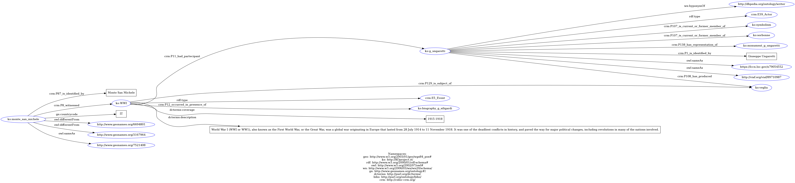

AIM OF THE PROJECT
Due to the educational background that characterizes our team, the main goal of this project is to exploit the possibilities offered by the Semantic Web in order to make clear the link between items pertaining to a specific period of time, artistic production and its cultural background. In particular, we focused on the relationship between G. Ungaretti’s poem “Veglia” and the way its creation has been influenced by his life in France, WWI and the landscape of the mountains. Furthermore, we found it interesting how the combination of all those aspects could be relevant to future generations.
VigiLOD aims to publish a set of data related to the poem “Veglia”, written by the Italian poet Giuseppe Ungaretti. Our idea takes in Giuseppe Ungaretti as a person, Symbolism as a concept, Monte San Michele as a place and 1915 as a date. We chose 10 different items and we described them by following their own specific metadata standards in order to extend their description and connect them with other related resources on the web.
OUR WORK METHOD
We set up a GitHub repository in order to store all the links and sources we found useful, along with our step-by-step results. Moreover, we met in person daily so as to discuss the workflow and our ideas.
{kind=link}
{kind=link}
{kind=link}
SET OF ITEMS
The choice criteria for our items were the variety and the reliability of the sources. Therefore, many of them come from researches on the Europeana database or similar cultural heritage repositories. Here is a list of our chosen items:
{kind=link}
Picture of G. Ungaretti in Italian infantry uniform during WWI
photograph{kind=link}
On the outbreak of the First World War Ungaretti supported his country’s intervention on the side of the Entente Powers. He enrolled in the Brescia Brigade of the 19th infantry in December 1915 and saw action in the Northern Italian theatre where he served in the trenches and became appalled by the realities of war. The conflict also made Ungaretti discover his talent as a poet.
The hope of brotherhood between all the people is expressed strongly, together with the desire of searching for a renovated "harmony" with the universe in the famous verses of the poem “Mattina”, a memorable four words piece of literary work: I illuminate (myself) with immensity.
What is exactly this immensity that lights up a body's soul, so strong that breaks through even the misery of war? For a poet, it is the immensity that comes with process of artistic creation: the epiphany that repeats itself, renewing the beauty of just being alive.
{kind=link}
Handprint of G. Ungaretti
artifactAs one of the items that represent Giuseppe Ungaretti we chose his handprint which is not a real work of art, but only a handprint. This object is part of the Dante Bighi’s Collection in Centro Studi Dante Bighi in Copparo. The Collection is a nucleus of ninety works by important contemporary artists donated to the town by the famous graphic designer from Copparo who lived in Milan between the fifties and eighties.
{kind=link}
Monument dedicated to Ungaretti in Santa Maria La Longa
artifact{kind=link}
Among the many soldiers who found rest in Santa Maria la Longa were Gabriele d'Annunzio and Giuseppe Ungaretti who, right here, during his rest in the winter of 1917, composed three poems: "Sleep", "Loneliness" and the famous "Morning". On the occasion of the 88th anniversary of this poem, the municipal administration has inaugurated a monument dedicated to Ungaretti by the Friulian sculptor Franco Maschio. The statue depicts a body that rises and arches. Nearby there are also three karst stones where the three poems by Ungaretti have been engraved.
{kind=link}
Pocket watch of austro-hungarian soldier
artifact Europeana collectionsAs other poems of G. Ungaretti, “Veglia” was written while the poet was on the Carso battlefront during WWI. The content of the poem is strongly influenced by the nature and the landscapes he was used to see there. The choice of this artifact is due to the fact that it allows us to characterize this mountain as an important scenario of the war. It documents the passage of a soldier who, like G. Ungaretti himself, was there for that specific reason.
{kind=link}
Biography of G. Siligardi
died fighting in Monte San Michele in 1915, bibliographic resourceAs in the aforementioned example, the biography of a soldier who fought and died on the Mount San Michele the very same year in which Ungaretti created “Veglia” is useful to highlight the historical importance of this mountain, its connection with a specific event and the overall influence it had on the analyzed poem.
{kind=link}
Picture of Cima Quattro in Monte San Michele
photographMuseo civico del Risorgimento di Bologna
Since it is a visual mean of communication, it is clear that a photo is the most effective and precise way to represent a place. This photograph, provided by Museo Civico del Risorgimento in Bologna, portrays exactly the “top number four” of the mountain, which is the one on which Ungaretti wrote “Veglia”.
{kind=link}
La Voce
newspaper of 1915 which G. Ungaretti contributed to, archival document,What is the best representative item of a date if not a newspaper? Through La Voce, G. Ungaretti fully discovers his passion for Italian and French literature and then publishes his first verses. For what concerns the historical background, La Voce agrees with the choice of the Italian government of entering WWI. In fact, its founder G. Prezzolini expresses his nationalist positions in 1911 already: “it is a duty of national discipline to sacrifice the personal views for the public interest”. In 1914, the newspaper acquires a new parallel title - “Magazine of militant idealism” - and chooses interventionism.
{kind=link}
The Symbolist manifesto
archival documentThe first phase of G. Ungaretti’s poetic style, which Veglia is a clear example of, was influenced by his stay in Paris. Before choosing to serve as a soldier in WWI, in fact, the Italian poet got to know many intellectual circles, among which the one of Symbolists. In the Symbolist manifesto it is possible to read the principles of these intellectuals’ use of language - to isolate the single word and capture its sound, to leave space to the sonority silence and condense the overall rhythm in short poems.
{kind=link}
Calligrammes
G. Apollinaire, bibliographic resourceThe choice of this book comes from the fact that G. Ungaretti was close friends with G. Apollinaire. During the War, they wrote to each other and shared the same experiences, to the point of falling in love with the same woman. Such collection of poems has revolutionized the history of literature and it is possible to see many aspects in common with G. Ungaretti’s philosophy of writing.
{kind=link}
The Seer
G. De Chirico, paintingParis is also the background of the meeting between G. Ungaretti and G. De Chirico. Not only the Italian poet explicitly declared: ”I give thanks to the destiny that allowed me to meet you [J. Paulhan] , leading me to De Chirico’s calm fantasies”, but even sold the painter’s artworks when he just wanted to throw them out.
METADATA STANDARD AND ALIGNMENT
We described each of our items through the most appropriate metadata standards. In fact, the metadata standards used by the content providers are not always enough to fully describe the items. For instance, Europeana uses Europeana Data Model. Because it is based on an international standard such as Dublin Core, it tends to excessively simplify the description of the objects. Here is the link to the document: click here
We then proceeded to the alignment of the different standards:
PEOPLE:
DC: creator; CDWA: Creator description; CCO= Creator display; DACS= name of creator(s); VRA core = vra:agent in
PLACES:
CDWA: 21.2 Repository/Geographic location; CCO= Current Location; ISAD= 3.5.1 Existence and location of the original; VRA core= vra:location ,
DATES:
DC date, coverage= CDWA 1.3 Object/work type date, 4.2.1 Earliest date, 4.2.2 Latest date = CCO Earliest date, latest date, = DACS 4.2 Creation Date = ISBD publication = VRA core=
CONCEPTS:
DC:Description; = DACS: 5.3 Appraisal etc. =CDWA:18.1 Descriptive Note text; VRA core:
TECHNICAL PART - RDF FOR THE CONNECTION OF EXTERNAL RESOURCES
URIs, External resources, RDF Turtle, Graph Model
Finally, we invented three URIs for our three entities: G.Ungaretti as a person, Monte San Michele as a place, and WWI as a concept.

And described our entities in RDF. We chose to use RDF Turtle because its syntax was simple, it could be validated with an online validator (in particular, we used This website and then visualized through an online grapher tool)
All the three of them together
